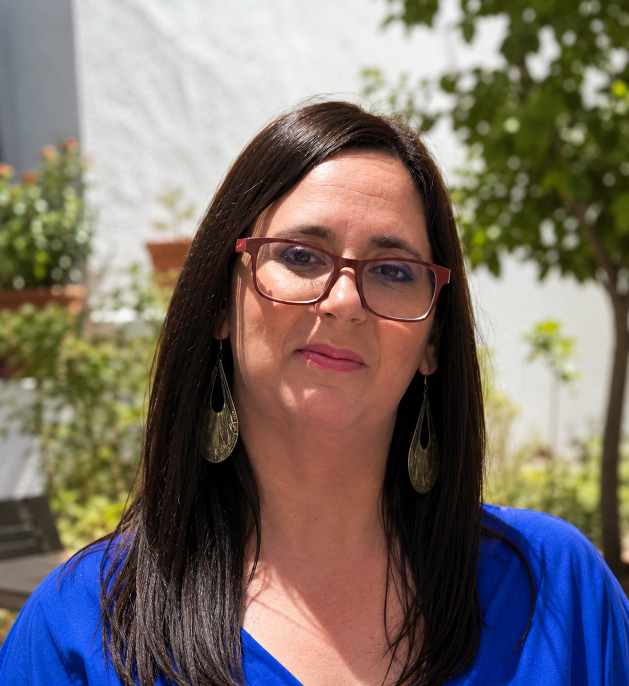
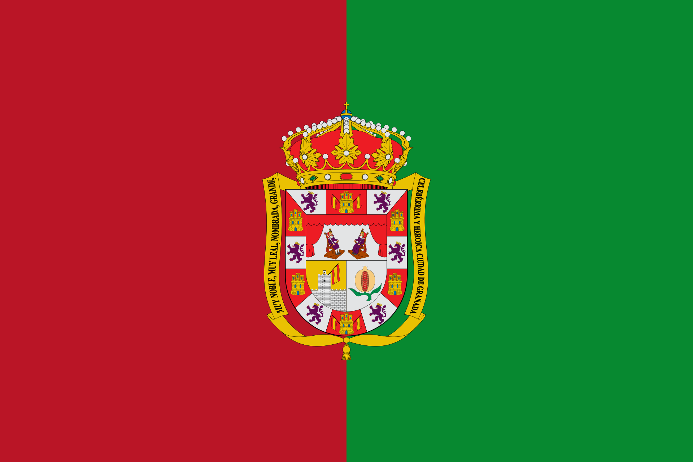
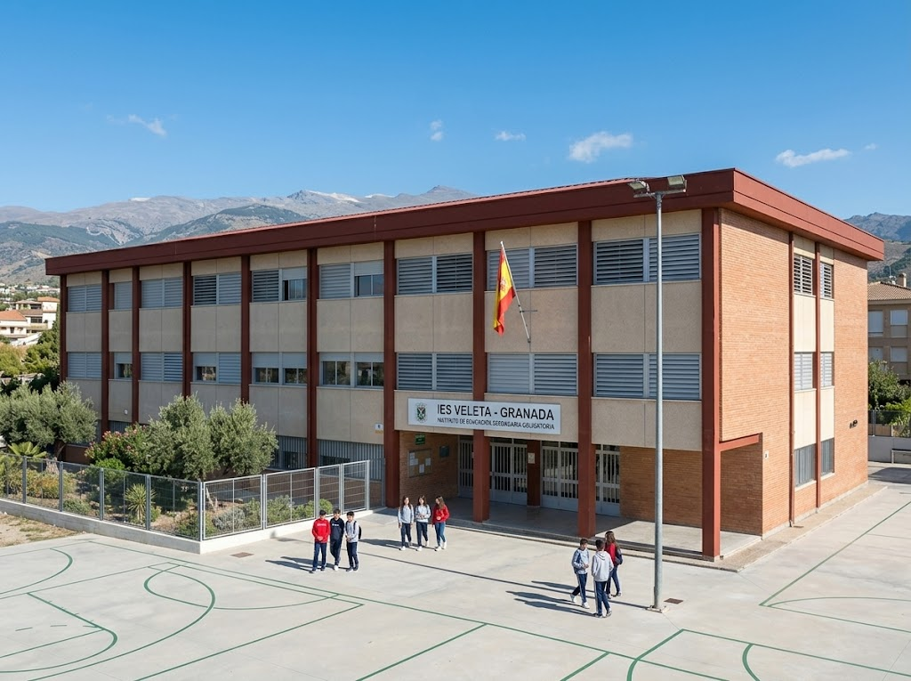
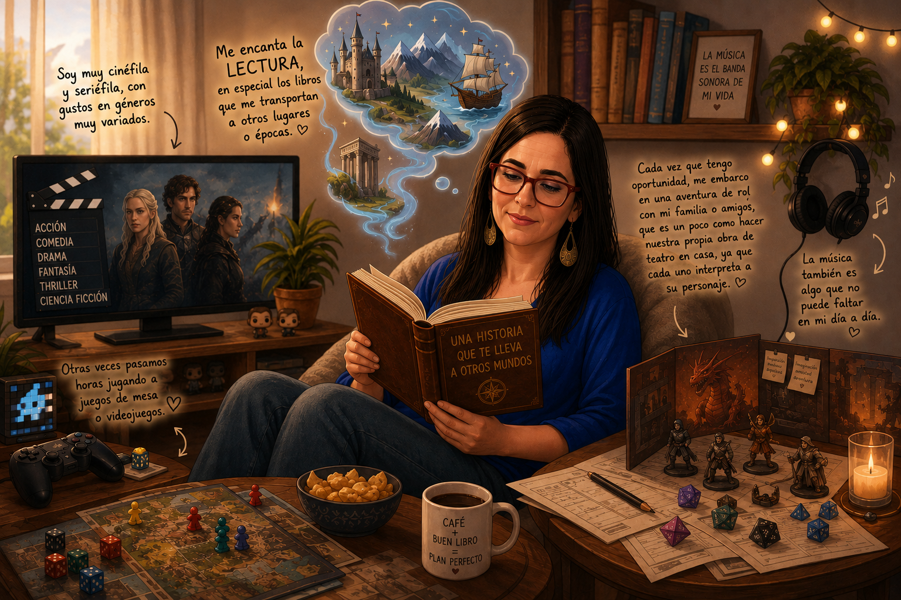
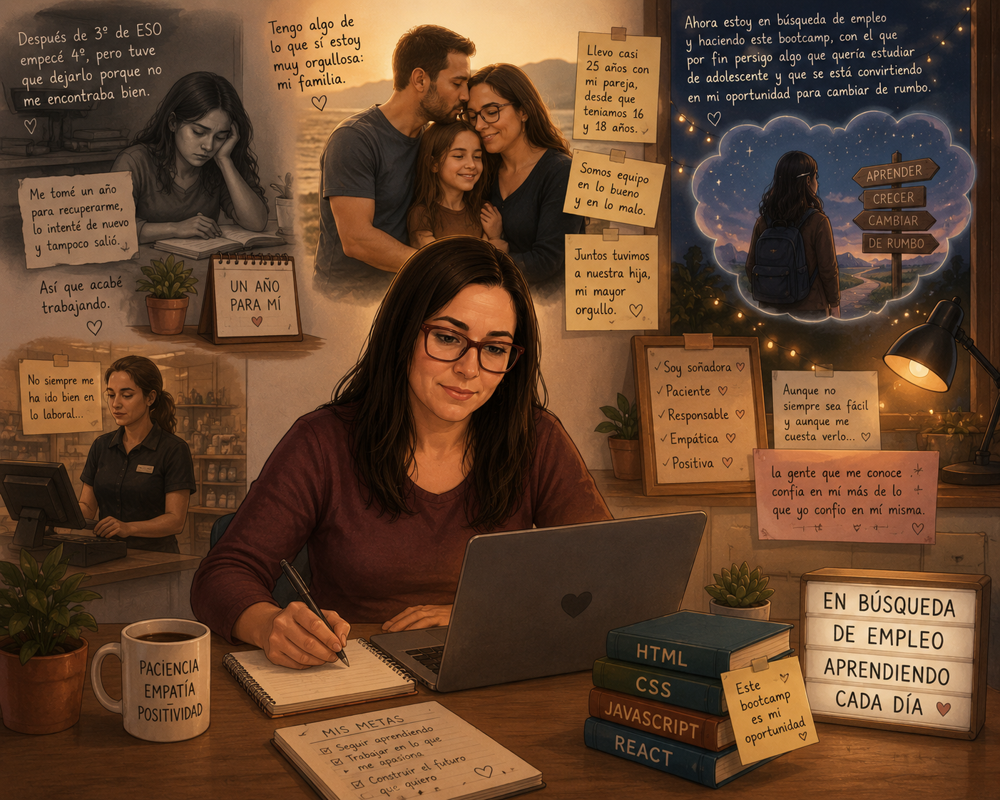

¿Quién soy?
Mi nombre es Maria Luisa Ruiz Torres, pero mejor llamadme Marisa que me gusta más.

Mi nombre es Maria Luisa Ruiz Torres, pero mejor llamadme Marisa que me gusta más.

Nací en Granada una de las ciudades más bonitas de España.

Cursé la EGB en el colegio público 28 de Febrero que después se convirtió en el IES Veleta dónde estudié secundaria.

Me encanta la lectura, en especial los libros que me transportan a otros lugares o épocas. También soy una persona muy cinéfila y seriéfila, con gustos en géneros muy variados. Cada vez que tengo oportunidad, me embarco en una aventura de rol con mi familia o amigos, que es un poco como hacer nuestra propia obra de teatro en casa, ya que cada uno interpreta a su personaje. Otras veces pasamos horas jugando a juegos de mesa o videojuegos. La música también es algo que no puede faltar en mi día a día.

Poco después de empezar 4º de ESO, tuve que dejarlo porque no me encontraba bien. Me tomé un año para recuperarme, lo intenté de nuevo al curso siguiente y tampoco salió, así que acabé trabajando. No siempre me ha ido bien en lo laboral, pero tengo algo de lo que sí estoy muy orgullosa: mi familia. Llevo casi 25 años con mi pareja, somos equipo, y juntos tuvimos a nuestra hija, mi mayor orgullo. Ahora estoy en búsqueda de empleo y haciendo este bootcamp, con el que por fin tengo la oportunidad de cumplir el sueño de mi adolescencia y que se está convirtiendo en mi oportunidad para cambiar de rumbo. Soy soñadora, paciente y responsable, intento ser empática y positiva aunque no siempre sea fácil, y aunque me cuesta verlo, la gente que me conoce confía en mí más de lo que yo confío en mí misma.
